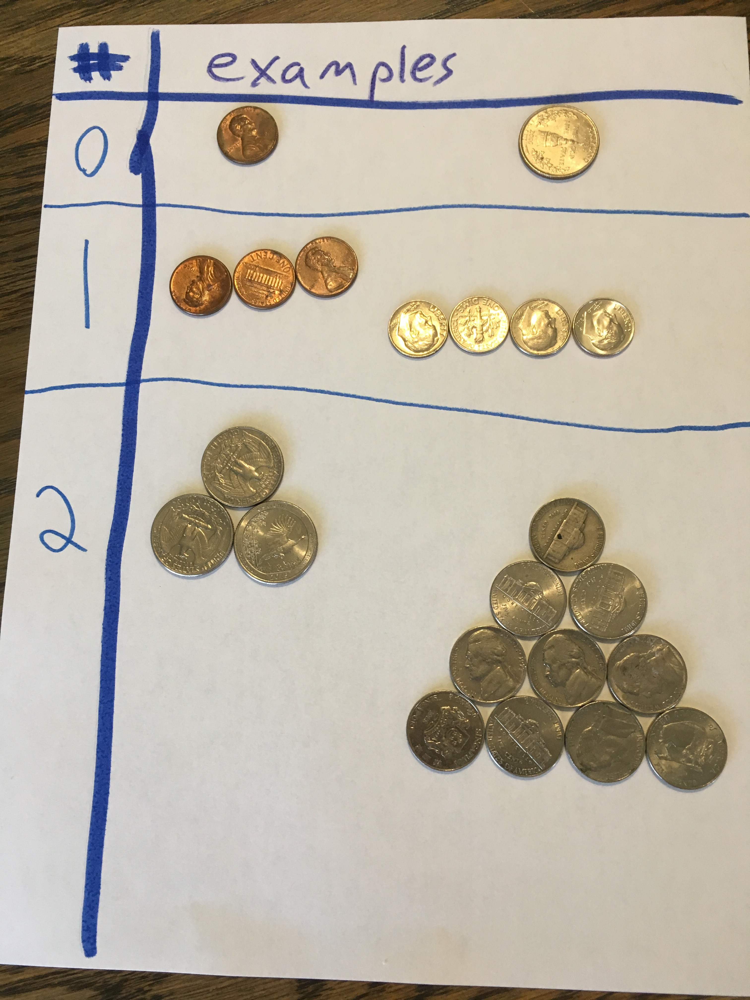

Sequences- My Obsession
This page is a little different from the rest. It's a personal story, but it also has extra information about the Triangle.
If you're not interested, you can stop reading here. For everyone else, let's get started!
I can't give exact dates here, but I've been interested in the Triangle for years. I liked messing around with it, doing different things with the numbers. I recently rediscovered a partially finished set of posters I had made about some basic properties of Pascal's Triangle.
I liked discovering things, and I soon found a problem that captured my attention.
*drumroll*
Sequences!
Basically, we're talking about the diagonals in Pascal's Triangle.

In this image, I drew them right to left, but they can go either way since Pascal's Triangle is symmetrical.
The first few are:
- Sequence 0 (just ones): 1 1 1 1 1
- Sequence 1 (counting numbers): 1 2 3 4 5
- Sequence 2 (triangular numbers): 1 3 6 10 15
- Sequence 3 (tetrahedral numbers): 1 4 10 20 35
Properties
As you may have noticed in some of the names, the sequences are related to geometric formations.
Specifically, sequence n represents a formation in n dimensions.
Sequence 1 represents lines, and sequence 2 represents triangles.
Here are some examples:
As this continues, sequence 3 represents a 3D tetrahedron made up of spheres. Each sequence after that represents a formation that cannot exist in 3D space.
Anyway, my goal was to find the equation for each sequence. The first few were easy enough.
S0(x) = 1 or x0
S1(x) = x or x1
I was able to find a few more with my calculator.
S2(x) = (1/2)x2 + (1/2)x
S3(x) = (1/6)x3 + (1/2)x2 + (1/3)x
S4(x) = (1/24)x4